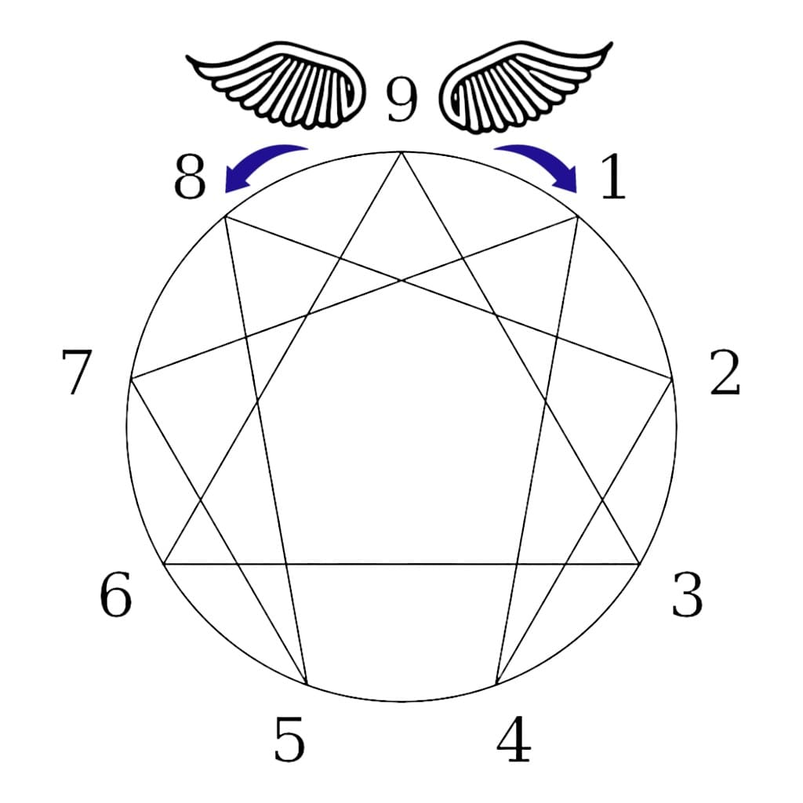

Existují tři základní způsoby pohledu na pohyb v rámci Enneagramu:
Křídla
Čáry

Enneagram je mnohem více než jen devět bodů na průsečíku trojúhelníku a šestiúhelníku nebo sada kategorií či typů, do kterých je třeba „roztřídit“. Je to psychodynamický rámec, který poskytuje účinný model pro pochopení fungování vývoje a integrace.
Enneagram neposkytuje „rychlé řešení“ s omezenou životností po dosažení vhledu. Umožňuje lidem rozvíjet se v průběhu času, protože k nám Enneagram promlouvá, jak se my a naše okolnosti mění.
V tomto rámci křídla, instinkty, úrovně integrace a linie představují pohyb a cestu, na které se v životě nacházíme. Darem Enneagramu je bohatství potenciálu a pohybu, které nabízí, prolínání mezi typem jádra, křídly a linií uvolnění a spojení a úrovněmi integrace k plnějšímu prozkoumání vlastní bytosti.